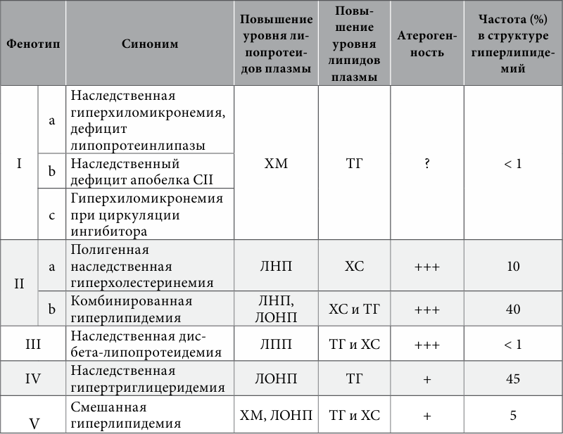
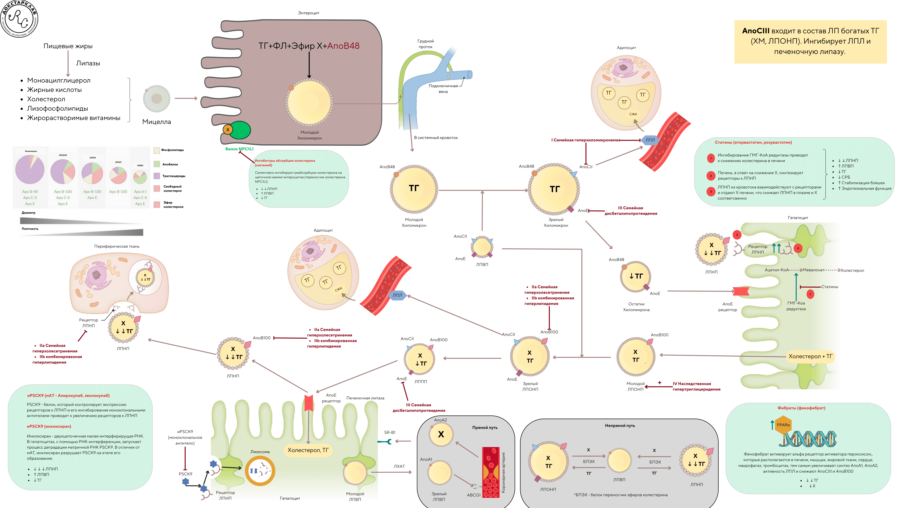

health in your hands.
Нарушения липидного обмена
Что такое дислипидемия?
Дислипидемия - это состояние, когда концентрации липидов и липопротеидов крови выходят за пределы нормы, могут быть вызваны как приобретенными (вторичными), так и наследственными (первичными) состояниями.
По теории образования атеросклероза дислипидемия является ведущим фактором возникновения атеросклероза и последующих сердечно-сосудистых осложнений.
Основные причины вторичных дислипидемий- Сахарный диабет
- Гипертиреоз
- Хроническая почечная недостаточность
В настоящее время ВОЗ принята классификация Fredrickson (1967), согласно которой выделяют несколько ее фенотипов
Основные группы препаратов лечения атеросклероза направлены на влияние на липидный обмен.
Семейная гиперхолестринемия
Что такое семейная гиперхолестеринемия?
Семейная гиперхолестеринемия (СГХС)- это наследственное аутосомно-доминантное заболевание, которое ведет к выраженному нарушению метаболизма липопротеидов, обусловленное мутациями генов, регулирующих экспрессию рецепторов ЛНП (LDLR), апобелка В100, профермента PCSK9. СГХС проявляется стойким повышением уровня ХС ЛНП и ранним развитием атеросклероза.
Распростроненность СГХСГетерозиготная форма СГХС характеризуется достаточно высокой распространенностью (1:300–1:500), гомозиготная СГХС встречается редко (1:1000000).
Как правило, у мужчин и женщин с геСГХС и уровнем общего холестерина 8–15 ммоль/л (310–580 мг/дл) ИБС обычно развивается в 3–4 декаде жизни. При этом атеросклероз коронарных артерий при геСГХС обнаруживается у мужчин уже в возрасте 17 лет, у женщин – в 25 лет. Однако в случае ранней диагностики и своевременно начатого лечения геСГХС возможно предотвращение развития атеросклероза и ранней ИБС. При гоСГХС уровень общего ХС колеблется в пределах 12–30 ммоль/л (460–1160 мг/дл), ИБС развивается в молодом возрасте, и без лечения риск развития сердечно-сосудистых осложнений, в том числе и фатальных, крайне высок.
Диагностика СГХСРазработаны диагностические критерии СГХС – Simon Broome Criteria в Англии и Dutch Lipid Clinic Network в Нидерландах, в которых по балльной системе оценивается вероятность заболевания у обследуемого лица, что делает их весьма удобными для применения в клинической практике.
Генетическое обследование для постановки диагноза СГХС или клинической оценки обычно не требуется, но в сомнительных случаях становится необходимым. Общепринято, что СГХС развивается в случаях мутации трех генов: ЛНП-рецепторов (LDLR), апобелка B100 (APOB) и PCSK9. Кроме того, указывается возможная роль мутации белка модулятора рецепторов ЛНП.
Оптимальным для выявления больных с СГХС признан подход, основанный на обследовании родственников пациента – каскадный скрининг. СГХС следует заподозрить в случае выраженного повышения уровня ХС ЛНП: у взрослых старше 20 лет > 4,9 ммоль/л (190 мг/дл), у детей и подростков > 4,1 ммоль/л (160 мг/дл). Вероятность СГХС выше у лиц, в семьях которых наблюдались случаи гиперхолестеринемии, а также ранней ИБС (у мужчин моложе 55 лет, у женщин моложе 65 лет). При выявлении этих признаков целесообразно провести каскадный скрининг по выявлению СГХС у родственников пробанда. Как правило, каскадный скрининг состоит из определения мутации, определения уровня липидов и наличия выявленной мутации у родственников 1-й и 2-й линии родства. Дети с подозрением на геСГХС должны быть обследованы как можно раньше, предпочтительно в возрасте от 5 до 10 лет. С целью обнаружения СГХС в детском возрасте (у детей, один или два родителя которых страдают СГХС), следует рассмотреть три стратегии: каскадный скрининг, универсальный скрининг (на основании фенотипических изменений) или селективный скрининг (на основания выявления у родственников мутации, которая обнаружена у пробанда). Следует подчеркнуть, что в настоящее время определение ОХС и его фракций не входит в стандарты обследования детей, хотя необходимость проведения такого анализа очевидна. Более того, в России до настоящего времени отсутствуют стандартизированные по полу и возрасту референсные значения ХС ЛНП